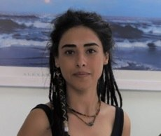

2024
Uniform asymptotic and input to state stability by indefinite Lyapunov functions
G. Şahan, D. Özdemir · European Journal of Control, p. 100945
2025
Stability analysis of nonlinear time-varying cascade systems by indefinite derivative
D. Özdemir, G. Şahan · 25th International Conference on Control, Automation and Systems (ICCAS), IEEE, pp. 1009–1014
2022
Uniform asymptotic stability by indefinite Lyapunov functions
G. Şahan, D. Özdemir · 13th Asian Control Conference (ASCC), IEEE, pp. 1771–1774
2023
D. Özdemir et al. · Bir-Yay, Ankara
2020 – 2022
- MATH 121 Basic Mathematics
- MATH 141 / 142 Basic Calculus I–II
- MATH 145 / 146 Calculus for Engineering and Science I–II
- MATH 255 Differential Equations
- MATH 262 Linear Algebra II
- MATH 368 An Introduction to Mathematical Control Theory
- MATH 381 / 382 Numerical Analysis I–II
- MATH 334 An Introduction to Wavelets and Applications
- MSE 222 Applied Mathematics for Engineering
- CSE 501 Numerical Methods and Scientific Programming I
Izmir Institute of Technology
2019 – 2022
Izmir Institute of Technology · Qualitative Properties of Solutions of Some Keller–Segel Type Systems
2009 – 2014
Dokuz Eylül University, İzmir
Izmir Institute of Technology
2017 – 2018
Buca İnci Özer Tırnaklı Science High School, İzmir
2016 – 2017
Doğa College, İzmir
2014 – 2016
Uğur Tutorial, İzmir
2026
2025
25th International Conference on Control, Automation and Systems (ICCAS 2025) · EECI International Graduate School on Control — The Scenario Approach: Data Science for Systems, Control, and Machine Learning (M. C. Campi, S. Garatti)
2024
EECI International Graduate School on Control — Introduction to Nonlinear Systems & Control (H. K. Khalil) · I. Workshop on Applied Mathematics and Statistics · Izmir Mathematics Days V · 9th Workshop of the Women Mathematicians Association
2022
13th Asian Control Conference · Izmir Mathematics Days IV
2021
Turkish National Congress of Automatic Control (TOK)